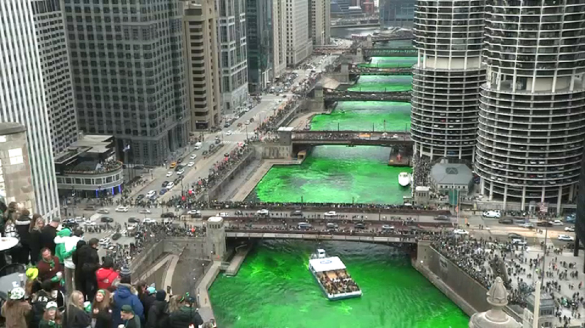

St. Patrick's Day, celebrated on March 17th, honors St. Patrick, the patron saint of Ireland. The holiday's origins can be traced back to the early 17th century when it was designated as a feast day by the Catholic Church. St. Patrick is credited with bringing Christianity to Ireland and is known for using the three-leafed shamrock to explain the Holy Trinity. Over time, the holiday evolved from a religious observance to a celebration of Irish culture and heritage, marked by parades, music, dancing, and the wearing of green attire.
In the United States, St. Patrick's Day gained popularity among Irish immigrants in the 19th century and has since become a widely recognized cultural holiday. Today, it is celebrated not only in Ireland and the United States but also in many other countries around the world, with festivities that showcase Irish traditions and customs. St. Patrick's Day has become a symbol of Irish identity and a day for people of all backgrounds to come together in the spirit of joy and camaraderie.
